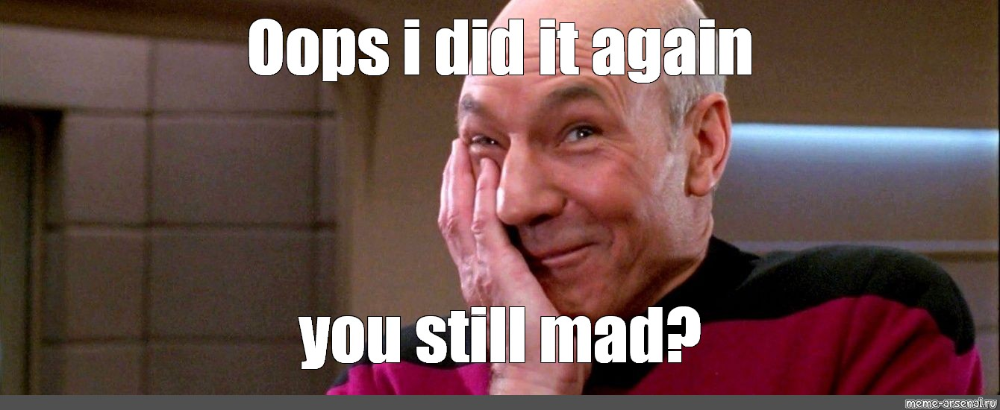

Андрей Макар-Уваров, СИНИМЕКС
Андрей Макар-Уваров, СИНИМЕКС
Это стадия мечтаний и изъявления серьезных намерений в отношении мечты. Ухаживание заканчивается, когда основатель решается на риск, и тогда начинается Младенчество.
В ходе Младенчества никто не задумывается о документообороте, системах, процедурах и методах контроля. Стадия Младенчества завершается, когда налаживается стабильное движения движение средств. Начинается стадия Давай-давай.
Это стадия быстрого роста. Нет процессов, все занимаются всем. Стадия Давай-давай завершается, когда компания сталкивается с проблемами. С ними приходит Юность.
На этой стадии компания сталкивается с проблемой бесконтрольного роста и переживает трансформацию. Приходит осознание потребности в процессах. Если организация успешно преодолеет эту стадию и разработает меры контроля, не растеряв при этом гибкость, наступает стадия Расцвета.
Расцвет – это стадия жизненного цикла, на которой все пребывает в гармонии. Дисциплина не мешает видению, контроль находится в равновесии с гибкостью. Если не прикладывать усилий, чтобы укрепиться в Расцвете, начнется Старение.
Организация все еще сильна, но ей не хватает пыла, сопровождавшего предшествующие стадии. Раньше она стремилась к тому, чего хотела. Теперь хочет того, что ей доступно.
«Не выделяться» становится лозунгом жизни. Внешние признаки респекта- бельности. Бездействие в постоянно изменяющейся среде не проходит бесследно. Начинается стадия Контробвинений
Это стадия распада, когда в компании начинается охота на ведьм: ищут, кто виноват, вместо того чтобы пытаться поправить положение. Руководители борются за территорию, изолируясь друг от друга и от потребителей. В компании царит атмосфера зависти.
В компании все толще становятся методические руководства, разрастается документооборот, и разные правила и политики душат инно- вации и изобретательность. Когда сотрудники возражают против процедур и процессов, руководство отвечает: «Так положено»
Компания может умирать годами, а может погибнуть мгновенно, от одного удара, когда потоки денежных средств прекращаются и организация больше не может платить по счетам.
Команда разработки иногда днями ждет работающий dev стенд с backend.
Вжух, о смене контрата мы узнаем уже после начала тестирования.
Твое эмоциональное состояние влияет не только на тебя
Мотивация и доверие в команде, как ключевой фактор выживания в ситуации.
Честное описание ситуации. Выписка списка проблем, с описанием что можно решить, а что прийдется держать на ручном контроле.
Даже если эта лодка очень странная :-).
Нет, значит нет.